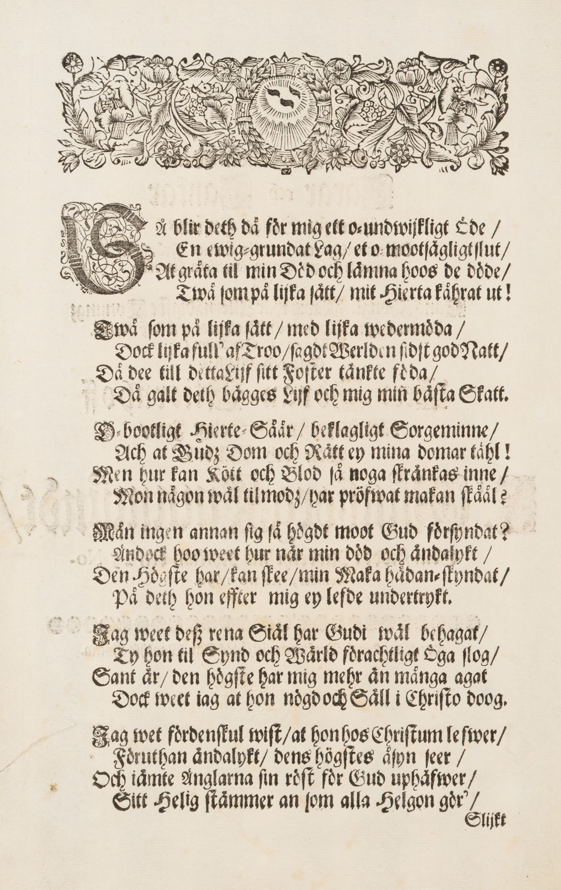
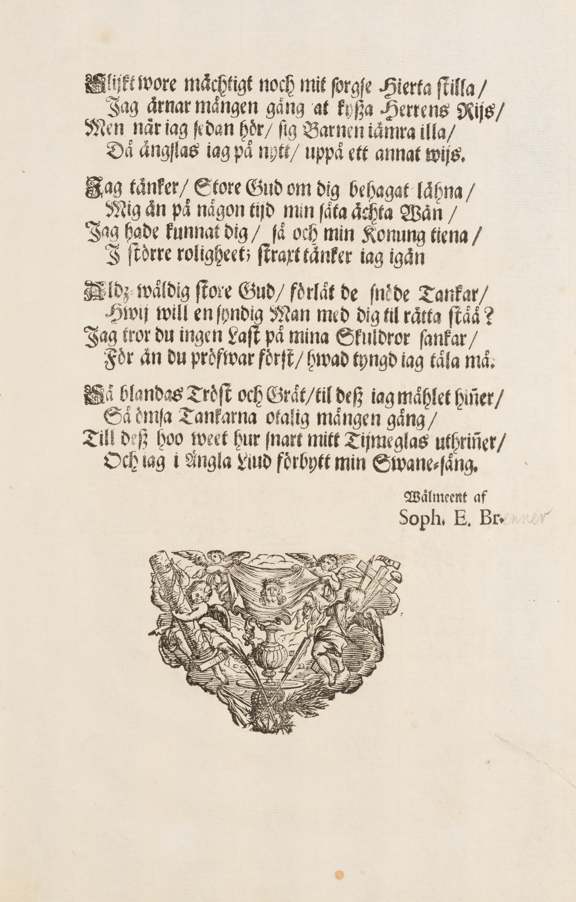

| Faksimil | Text |
|---|---|
 |
En Sorgbunden Mans
|
 |
(Dekorativ illustration med detaljer såsom lövverk, fåglar, krona och lagerkrans.)
SÅ blir deth då för mig ett o-undwiſkligt Öde / /
En ewig-grundat lag / et o-mootſägligt ſlut /
At gråta til min Död och lämna hoos de döde /
Twå ſom på lijka ſätt, mit Hierta kåhrat ut!
Twå som på lijka ſätt / med lijka wedermöda /
Dock lijka full' af Troo / ſagdt Werlden ſidſt god Natt /
Då dee till detta Lijf ſitt Foſter tänkte föda /
Då galt deth bägges Lijf och mig min bästa Skatt /
Obootligt Hierte-Såår / beklagligt Sorgeminne /
Ach at Gudʒ Dom och Rätt ey mina domar tåhl!
Men hur kan Kött och Blod ſå noga ſKränkas inne /
Mon någon wäl tilmodʒ / har pröfwat makan skåål?
Mån ingen annan ſig ſå högdt moot Gud förſyndat?
Ändock hoo weet hur när min död och ändalykt /
Den Högſte har / kan ſkee / min Maka hädan-ſkyndat /
På deth hon effter mig ey lefde undertrykt.
Jag weet deß rena Siäl har Gudi wäl behagat /
Ty hon til Synd och Wärld förachtligt Öga ſlog /
Sant är / Den högſte har mig mehr än många agat /
Dock weet iag at hon nögd och Säll i Chriſto doog.
Jag wet fordenſkul wiſt / at hon hos Chriſtum leſwer,
Föruthan ändalykt / dens högſtes åſyn ſeer /
Och iämte Änglarna ſin röſt för Gud uphäfwer /
Sitt helig ſtämmer an ſom alla helgon gör' /
Slijkt |
 |
Slijkt wore mächtigt noch mit ſorgſe hierta ſtilla /
Jag ärnar mången gång at kyßa herrens Riis /
Men när iag ſedan hör / ſig Barnen iämra illa /
Då ängſlas iag pä nytt / uppå ett annat wijs.
Jag tänker / Store Gud om dig behagat lähna /
Mig än på någon tijd min ſåta ächta Wän /
Jag hade kunnat Dig / ſå och min Konung tiena /
I ſtörre roligheet; ſtraxt tänker iag igän
Aldz-wåldig ſtore Gud / förlåt de ſnöde Tankar /
Hwij will en ſyndig Man med dig til rätta ſtåå ?
Jag tror du ingen Laſt på mina Skuldror ſankar /
För än du pröfwar förſt / hwad tyngd iag tåla må.
Sa blandas Tröſt och Gråt /til deß iag måhlet hinner /
Så ömſa Tankarna otalig mången gång /
Till deß hoo weet hur ſnart mitt Tijmeglas uthrinner /
Och iag i ängla Liud förbytt min Swane-sång.
Wälmeent af
Soph. E. Br (Dekorativ illustration med urna, keruber, kors och Jesus med törnekrona.) |
{kind=link}
{kind=link}